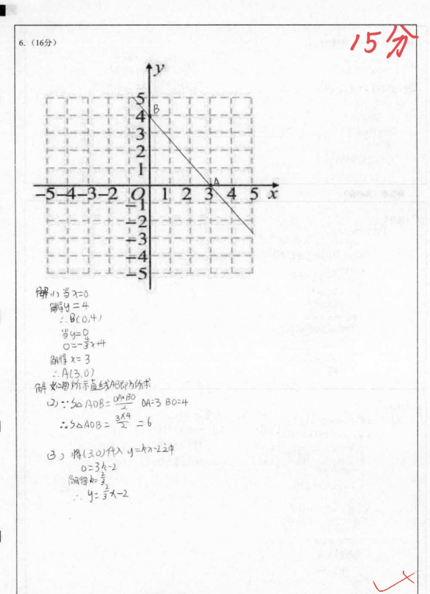
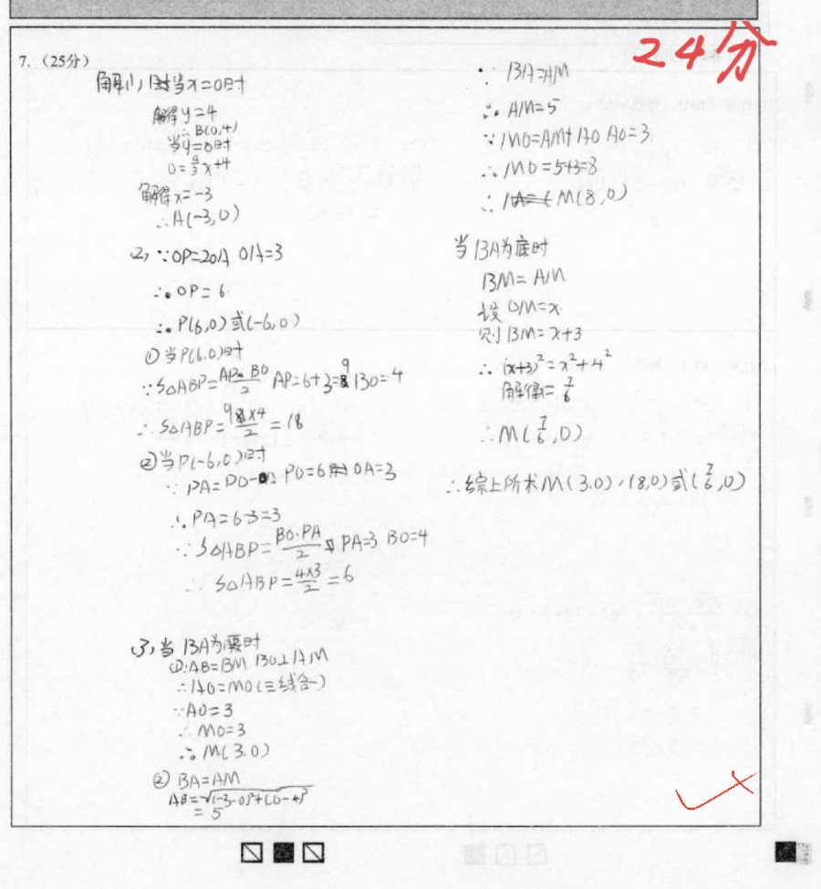

1. 已知 A(3, 0)、B(0, 4)，x 轴上有一点 M，使 △ABM 是等腰三角形。符合条件的 M 点共有几个？
正确答案 C。AB = 5；AB=AM → m = 8 或 −2；BA=BM → m = −3 或 3（3 与 A 重合舍去）；MA=MB → m = −7/6。共 4 个：8、−2、−3、−7/6。
八年级数学 · 11 月 4 日课后作业 · 第 6、7 题
第 6 题 15 / 16，第 7 题 24 / 25。 你的计算几乎全对——真正扣分的，是作图规范和漏了一种情况。
01 / 第 6 题 · 15 / 16
这 1 分不在计算上，在作图上。先看题，再看你的解答，最后自己动手画一遍。
已知一次函数 y = −43x + 4 的图象与 x 轴交于点 A，与 y 轴交于点 B。
x = 0 → y = 4，所以 B(0, 4)；
y = 0 → 0 = −4/3·x + 4 → x = 3，所以 A(3, 0)。
S△AOB = ½ × OA × OB = ½ × 3 × 4 = 6。
把 A(3, 0) 代入 y = kx − 2：0 = 3k − 2 → k = 2/3，
所以 y = 2/3·x − 2。
你的直线确实经过了 B(0,4) 和 A(3,0)，但只从 B 画到 A 下方一点，两端都没有画出网格。
这 1 分不是“不会”，是“画得不完整”。下次记住：一次函数图象 = 一条穿出网格的直线。
动手实验
拖动滑块改变斜率 k，直线始终经过 B(0,4)。看看什么时候正好穿过 A(3,0)。
把 k 调到 −4/3，直线就会正好经过 A。

红笔 15/16：坐标、面积、解析式都对；扣的 1 分在图象只画了一小段、没有向两端延长。
02 / 第 7 题 · 24 / 25
等腰三角形要“三边两两相等”分三类。你的第三类少考虑了一半，漏掉了 M(2, 0)。
如图，直线 y = 43x + 4 与 x 轴相交于点 A，与 y 轴相交于点 B。
令 y=0 得 x=−3；令 x=0 得 y=4。
OA = 3，所以 OP = 6，P(6,0) 或 P(−6,0)。
P(6,0)：AP = 9，S = ½×9×4 = 18；
P(−6,0)：AP = 3，S = ½×3×4 = 6。
你写的是：M(3,0)、(−8,0)、(7/6,0) 三个点。
漏了 M(2, 0)。
原因：在“AB = AM”这一类里，你只算了 M 在 A 左边的情况（MO = AM + AO = 8）。
但 AM = 5，M 也可以在 A 的右边：m = −3 + 5 = 2。
动手实验
拖动 x 轴上的 M 点，观察三条边。当两条边相等时，M 会“吸附”成一个解。
先拖动 M 试试。提示：答案分布在 A 的左右两边。
| 情况 | 方程 | 解得 | 取舍 |
|---|---|---|---|
| AB = AM | |m + 3| = 5 | m = 2 或 m = −8 | 两解都要 |
| BA = BM | √(m² + 16) = 5 | m = 3 或 m = −3 | m = −3 与 A 重合，舍去 |
| MA = MB | (m + 3)² = m² + 16 | m = 7/6 | 一解 |
综上：M(2,0)、(3,0)、(−8,0)、(7/6,0)，共 4 个。

红笔 24/25：A、B、P、面积、三类情况都写了；第三类只取了 A 左边的一个解。
03 / 方法
AB = AM、BA = BM、MA = MB，三种情况各列一个方程。不要只画一种“看起来像”的图。
|m + 3| = 5 表示“到 −3 的距离是 5”，左右各一个：m = 2 或 −8。解完还要检验是否与已知点重合。
算出两个点 → 用直尺连线 → 两端延长出网格 → 交点标实心点。一次函数的图象是一条直线，不是线段。
04 / 举一反三
1. 已知 A(3, 0)、B(0, 4)，x 轴上有一点 M，使 △ABM 是等腰三角形。符合条件的 M 点共有几个？
正确答案 C。AB = 5；AB=AM → m = 8 或 −2；BA=BM → m = −3 或 3（3 与 A 重合舍去）；MA=MB → m = −7/6。共 4 个：8、−2、−3、−7/6。
2. 下列说法正确的是（ ）
正确答案 B。两点确定一条直线；作图要用直尺，并把直线延长出网格，交点标清楚。
3. 直线 y = −2x + 6 与 x 轴交于 A，与 y 轴交于 B，则 △AOB 的面积是（ ）
正确答案 C。A(3,0)，B(0,6)，S = ½ × 3 × 6 = 9。
05 / 带走这张卡
两处 1 分，都不是“不会”：
一处画得不完整，一处分类少了一半。